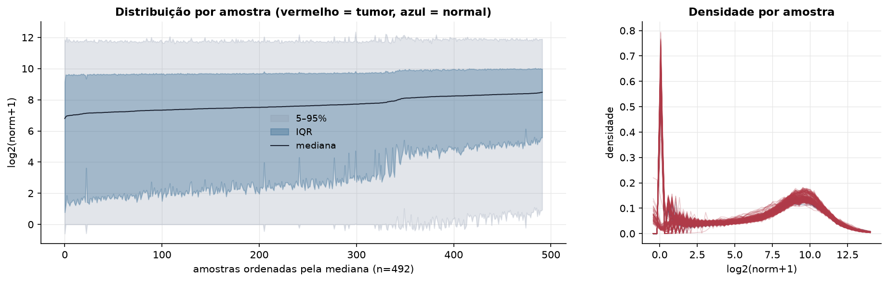
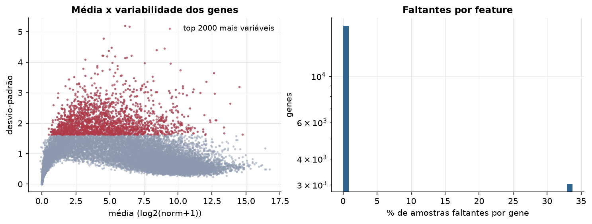
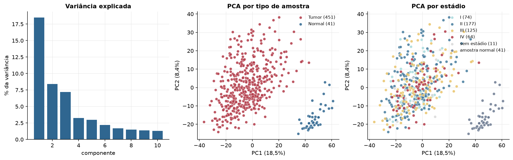
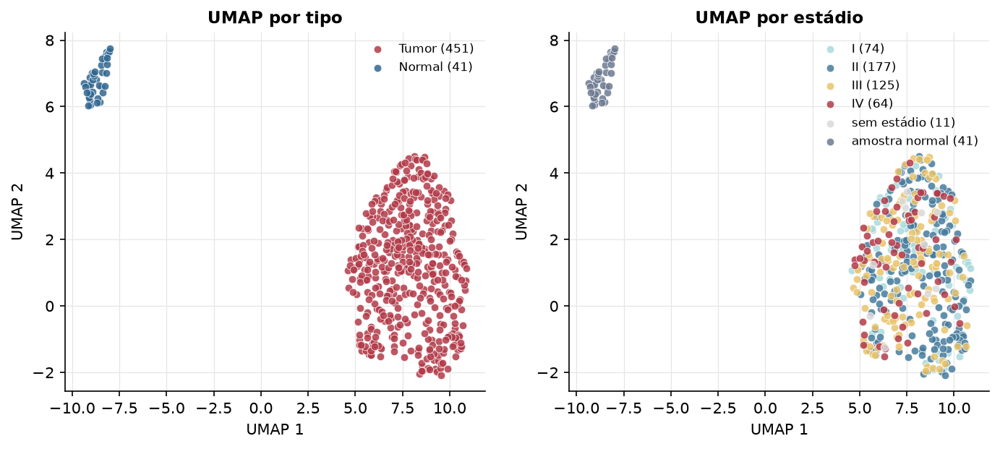
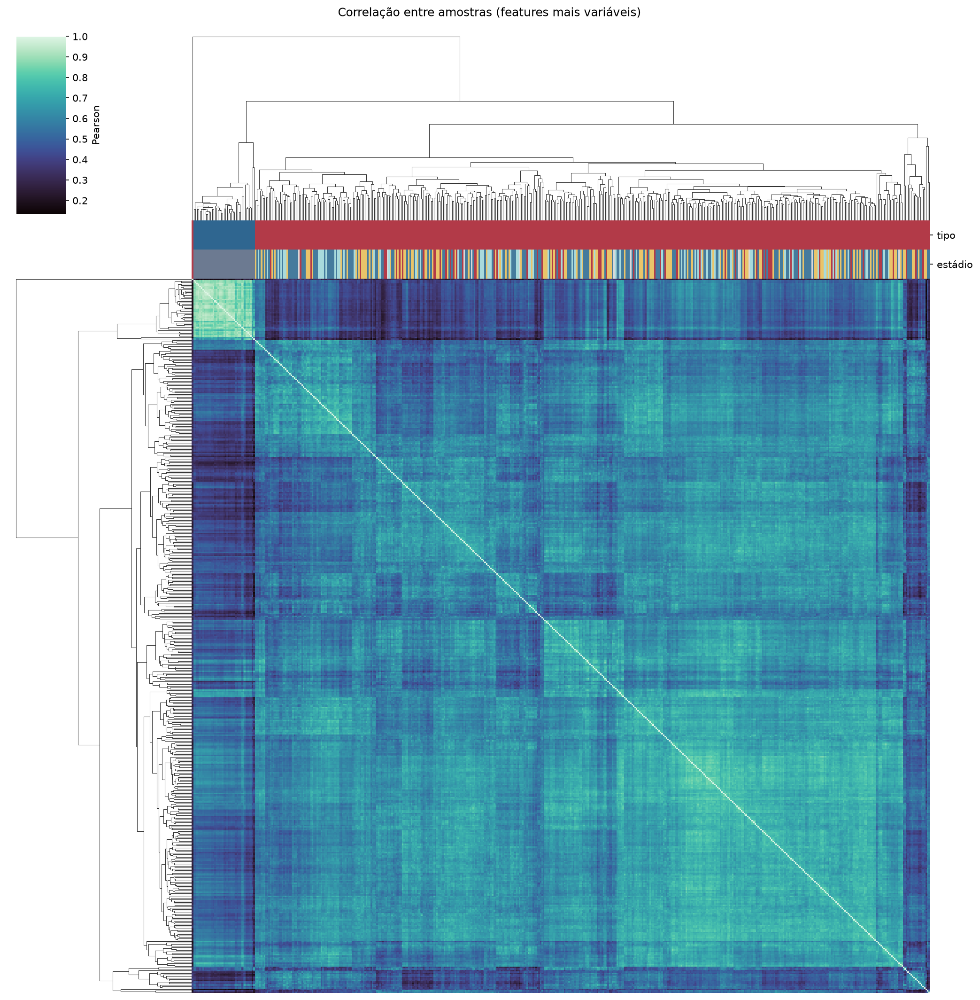
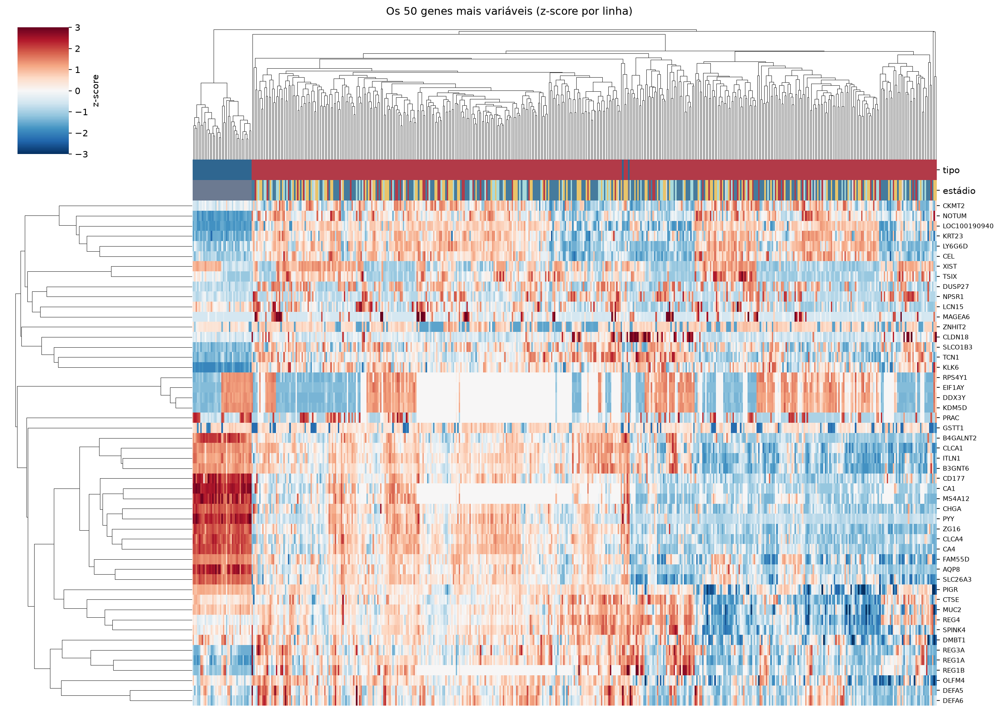
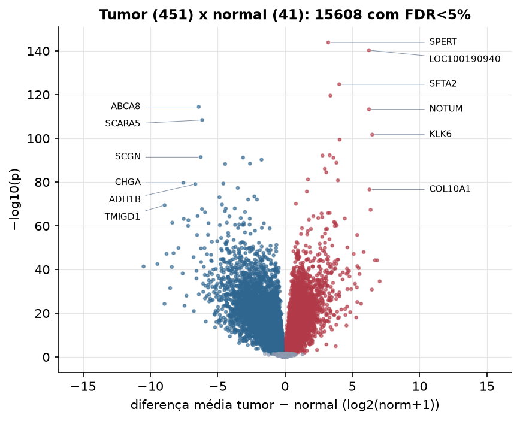
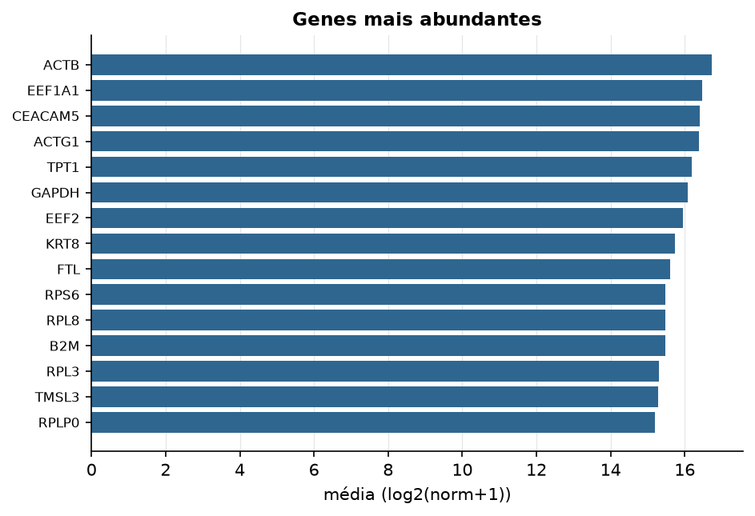

COAD · RNA-seq (PanCanAtlas)
Illumina HiSeq, RSEM normalizado e corrigido por lote (EB++), log2(x+1) · gerado em 21/10/2026 20:20
20.531genes
451amostras tumorais
41amostras normais
5,0%valores faltantes
Fonte: PanCanAtlas EB++ via API do Xena
Estes valores já vêm normalizados e com correção de lote entre plataformas e centros. Servem bem para modelos gaussianos ou redes neurais; para um modelo de contagem use as contagens brutas do GDC.
Principais resultados
- 20.531 genes medidos em 492 amostras (451 tumorais e 41 normais); 5,0% dos valores estão faltando.
- Os dois primeiros componentes principais explicam 18,5% e 8,4% da variância das features mais variáveis.
- Correlação mediana entre amostras: 0,61.
- Amostras com correlação muito abaixo das demais (possíveis outliers técnicos): TCGA-AA-3695-01.
- Tumor x normal: 15608 genes diferentes com FDR < 5% (7201 maiores no tumor, 8407 maiores no normal; 40 pacientes têm o par tumor-normal).
- Mais aumentados no tumor: SPERT, LOC100190940, SFTA2, CST4, NOTUM, KLK6, KLK7, DKK4.
- Mais reduzidos no tumor: ABCA8, SCARA5, SCGN, DIRAS1, C16orf62, LPAR1, ANO5, CHGA.
- Associações clínicas com p < 0,05 nos componentes principais: PC2 com estádio (p=0.00094); PC2 com idade (p=0.0015).
- Em mediana, 79,7% dos genes têm expressão acima de log2(norm+1)=1 em cada amostra.
Distribuição dos valores


Estrutura das amostras




Tumor x normal

Features mais diferentes entre tumor e normal
| diferenca_tumor_menos_normal | t | p | fdr | |
|---|---|---|---|---|
| SPERT | 3.216 | 37.354 | 1.35e-144 | 2.72e-140 |
| LOC100190940 | 6.232 | 39.007 | 4.59e-141 | 4.6e-137 |
| SFTA2 | 4.032 | 34.679 | 1.82e-125 | 1.22e-121 |
| CST4 | 3.372 | 33.456 | 2.77e-120 | 1.39e-116 |
| ABCA8 | -6.404 | -51.735 | 3.98e-115 | 1.59e-111 |
| NOTUM | 6.238 | 35.735 | 5.47e-114 | 1.83e-110 |
| SCARA5 | -6.145 | -46.779 | 3.97e-109 | 1.14e-105 |
| KLK6 | 6.478 | 38.804 | 1.86e-102 | 4.66e-99 |
| KLK7 | 4.06 | 27.938 | 3.91e-100 | 8.72e-97 |
| DKK4 | 3.323 | 25.857 | 4.7e-93 | 9.42e-90 |
| DMBX1 | 2.783 | 27.581 | 6.58e-93 | 1.2e-89 |
| SCGN | -6.259 | -43.32 | 3.73e-92 | 6.22e-89 |
| DIRAS1 | -3.115 | -33.312 | 5.9e-92 | 9.1e-89 |
| KLK8 | 3.6 | 25.566 | 7.15e-92 | 1.02e-88 |
| C16orf62 | -1.744 | -27.396 | 5.94e-91 | 7.94e-88 |
| LEMD1 | 3.821 | 30.28 | 1.48e-89 | 1.85e-86 |
| LPAR1 | -2.599 | -33.486 | 3.63e-89 | 4.29e-86 |
| ANO5 | -4.452 | -35.994 | 5.68e-89 | 6.32e-86 |
| SERPINA4 | 2.955 | 25.596 | 9.01e-87 | 9.5e-84 |
| FEZF1 | 3.069 | 24.098 | 3.54e-85 | 3.55e-82 |
| IGFL4 | 1.7 | 23.409 | 6.87e-82 | 6.56e-79 |
| OTX1 | 3.935 | 35.999 | 1.73e-81 | 1.57e-78 |
| CHGA | -7.553 | -37.085 | 2.19e-80 | 1.91e-77 |
| STMN2 | -4.578 | -36.116 | 5.1e-80 | 4.26e-77 |
| ADH1B | -6.657 | -38.368 | 8.79e-80 | 7.05e-77 |
| EPB41L3 | -3.507 | -33.866 | 5.06e-78 | 3.9e-75 |
| COL10A1 | 6.277 | 36.009 | 2.63e-77 | 1.95e-74 |
| LOC84931 | 1.624 | 22.629 | 2.15e-76 | 1.54e-73 |
| PID1 | -2.272 | -25.99 | 3.49e-74 | 2.41e-71 |
| GREM2 | -4.865 | -34.745 | 8.75e-74 | 5.85e-71 |
Associação com variáveis clínicas
p-valores da associação dos três primeiros componentes principais (só tumores) com estádio (Kruskal-Wallis), sexo (Mann-Whitney), idade (Spearman) e sobrevida global (Cox univariado).
| estádio (Kruskal) | sexo (Mann-Whitney) | idade (Spearman) | sobrevida OS (Cox) | |
|---|---|---|---|---|
| PC1 (14,4%) | 0.161 | 0.559 | 0.543 | 0.151 |
| PC2 (8,5%) | 0.000941 | 0.458 | 0.002 | 0.923 |
| PC3 (5,5%) | 0.093 | 0.805 | 0.541 | 0.105 |
Mais abundantes
